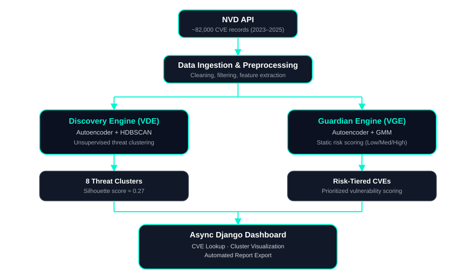

HELLO, I'M
Passionate about Artificial Intelligence, Machine Learning, Cybersecurity, and full-stack web development. Building intelligent, secure systems — including vulnerability intelligence platforms — that solve real-world problems through scalable, human-centered design.
I am a Cybersecurity postgraduate student and software developer with a strong interest in the intersection of Artificial Intelligence and Cybersecurity. Currently pursuing my Master's degree in Cybersecurity, I focus on building intelligent and secure systems capable of solving real-world problems.
My technical background spans machine learning, natural language processing, backend development, and intelligent automation. I have developed projects involving mental health analytics, sentiment analysis, predictive systems, AI-powered chatbots, and secure web applications.
Alongside development and research, I also serve as a Teaching Assistant in AI and programming laboratories, where I mentor students and assist in practical sessions involving Python, machine learning, and modern development technologies.
My current goal is to bridge the gap between AI and Cybersecurity by exploring how intelligent systems can improve digital security, threat detection, automation, and secure computing environments.
Python, JavaScript, Java, C++, PHP
TensorFlow, Keras, Scikit-learn, NLP, Deep Learning
Nmap, OWASP ZAP, Metasploit
HTML, CSS, Django, REST APIs
Pandas, NumPy, Matplotlib, Seaborn
MySQL, PostgreSQL, SQL
Git, Linux, VS Code, Jupyter Notebook
Assist students in AI, ML, and programming practicals. Provide support for TensorFlow, Python, NLP frameworks, and AI-focused lab sessions.
Developed a responsive full-stack consultancy website including blog integration, contact systems, and improved user engagement.
2025 – Present
Specializing in Cybersecurity, secure system design, network security, vulnerability assessment, penetration testing, and intelligent computing systems research.
2021 – 2025
Focused on AI, machine learning, web development, predictive systems, and software engineering.

A dual-engine vulnerability intelligence platform combining a Discovery Engine (Autoencoder + HDBSCAN) and a Guardian Engine (Autoencoder + GMM) for CVE clustering and risk scoring. Trained and evaluated on ~82,000 NVD CVE records (2023–2025), producing 8 defensible threat clusters, and served through a live, fully async Django dashboard with CVE lookup, cluster visualization, and report export.
Intelligent AI system that analyses emotional patterns, sentiment, and user-generated text to recommend mental health interventions and generate alerts.
NLP-powered sentiment analysis system that predicts cryptocurrency market trends using Twitter sentiment and machine learning classification models.
AI-powered multilingual chatbot system with session tracking, GPT integration, chat history, and feedback rating functionality.
Deep learning regression model using Keras to predict house prices with optimized hyperparameters and low prediction error.
CRC Press (Taylor & Francis) — in "Smart Industry 4.0: Computational Approaches for Optimization and Automation".
Co-invented an autonomous security robot integrating motion, infrared, and proximity sensors with HD/night-vision cameras and GPS-based pathfinding navigation for adaptive, real-time patrol. Designed a machine learning-driven threat analysis pipeline enabling real-time anomaly detection, automated alerting, and incident logging, with reduced false positives compared to static security systems.